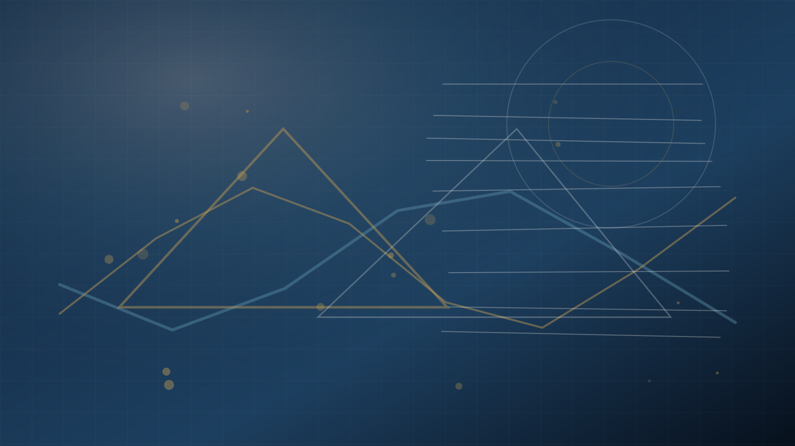

STEM Özel Ders
Fizik, matematik ve bilimsel düşünme
Üniversite fiziği, ileri matematik, kimya temelleri, malzeme bilimi, istatistik ve veri analizi; tanımlar ve temsilî sorular üzerinden çalışılır.
Üniversite desteği isteHizmetler
İhtiyacına uygun yolu seç: üniversite dersleri, sınav hazırlığı, teknik workflow, business/taxation proje çalışmaları veya onaylı öğrenci materyalleri.

STEM Özel Ders
Üniversite fiziği, ileri matematik, kimya temelleri, malzeme bilimi, istatistik ve veri analizi; tanımlar ve temsilî sorular üzerinden çalışılır.
Üniversite desteği isteEngineering & IT
Elektroteknik, devreler, Python, Jupyter, LaTeX, Beamer, hata ayıklama, raporlar, grafikler ve hesaplamalı notebook çalışmaları.
Teknik destek isteBusiness & Projeler
Business case, German taxation konuları, proje planlama, sunumlar, Excel/veri analizi ve akademik rapor yapısı.
Proje desteği isteSınav Hazırlığı
Abitur, A-Level, SAT, IB, IGCSE ve okuldan üniversiteye geçiş sürecinde matematik, fizik ve teknik dersler için çalışma planı.
Sınav hazırlığı isteÖğrenci Alanı
Özel ders klasörleri, korumalı kaynaklar, görevler, geri bildirim ve ilerleme takibi onaylı öğrenci erişimiyle düzenlenir.
Öğrenci alanıKaynaklar
Herkese açık örnekler, proje önizlemeleri, Python notebookları, PDF paketleri ve onay veya doğrulanmış satın alma sonrası açılabilecek premium kaynaklar.
Kaynakları inceleDers veya proje açıklamasını, mevcut seviyeni, deadline'ı ve örnek bir soruyu gönder. İlk mesajı karmaşık bir satış sürecine çevirmeden pratik bir ders formatı önerebilirim.